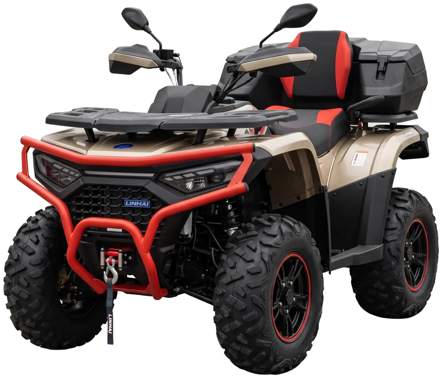
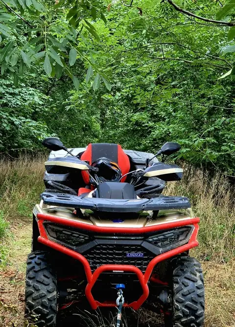
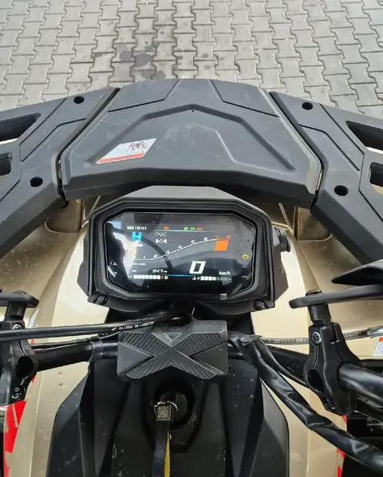
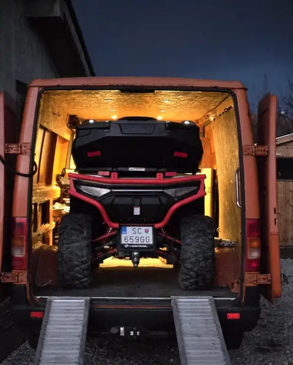
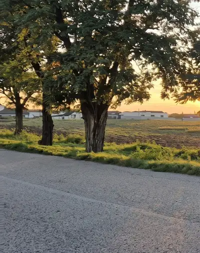
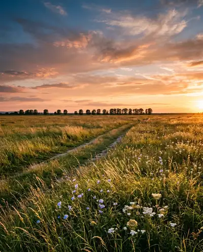
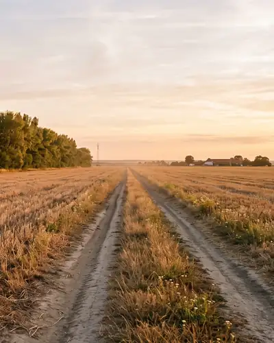
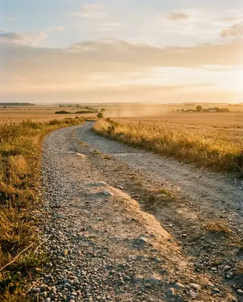

Štvorkolka na deň – prenájom v Senci

Prenájom štvorkolky v Senci a okolí
od 60 € / deň
Zavolať0908 775 426Prosím volajte aspoň 2 dni vopred.
Pozrite si skutočné fotkyStroj
Toto je presne tá štvorkolka, ktorú dostanete



Linhai Landforce 650 4x4. Žiadne obrázky z katalógu: na všetkých fotkách štvorkolky je presne tá, ktorú si požičiate.
- 4x4 pohon
- Redukcia áno
- Uzávierka áno
- max. 100 km/h
- 100 km denný limit
Fotogaléria


Kde sa môžete vyblázniť
Cesty, lúky, poľné cesty, ľahký terén. Len po povolených trasách, do lesa nie.
-

Cesty -

Lúky -

Poľné cesty -

Ľahký terén
Zábery krajiny sú ilustračné.
Senec a okolie
903 01 Senec. Dovoz až k vám domov za 0,5 € / km.
Cenník
Všetko na jednej tabuli. Žiadne prekvapenia.
Štvorkolka
60 € / deň
Doplnky
| Prilba | 10 € / deň |
|---|---|
| Kukla | 2 € / deň |
| Dovoz až k vám domov | 0,5 € / km |
Dobré vedieť
| Depozit | 300 € |
|---|---|
| Každý km nad 100 km za deň | 0,25 € |
| Znečistenie štvorkolky | 30 € |
| Oneskorené vrátenie | 50 € |
Ako to funguje
-
Zavolajte aspoň 2 dni vopred
Dohodneme sa na dni a na mieste dovozu.
-
Dovezieme štvorkolku
Až k vám domov, za 0,5 € / km.
-
Jazdíte
Max. 100 km za deň. Každý km navyše 0,25 €.
-
Vrátite ju čistú s plnou nádržou
Takú ju aj dostanete. Znečistenie 30 €, oneskorené vrátenie 50 €.
Podmienky a pravidlá
Jednoduché a platia bez výnimky.
Podmienky
- Vek 18 rokov
- Vodičský preukaz skupiny B
- Depozit 300 €
- Požičanie minimálne 1 deň
- Denný limit 100 km, každý km navyše 0,25 €
- Odovzdanie a vrátenie čistá a s plnou nádržou
- Znečistenie štvorkolky 30 €, oneskorené vrátenie pokuta 50 €
Zákazy
- Zákaz pretekov
- Zákaz zvozu dreva
- Zákaz jazdy po lesoch a zakázaných cestách
Jazda len po povolených trasách a poľných cestách
Časté otázky
Koľko stojí prenájom štvorkolky?
60 € na deň. Prilba 10 € na deň, kukla 2 € na deň, dovoz až k vám domov 0,5 € za kilometer.
Čo potrebujem na požičanie štvorkolky?
Vek aspoň 18 rokov, vodičský preukaz skupiny B a depozit 300 €.
Stačí mi vodičák na auto?
Áno. Podmienkou je vodičský preukaz skupiny B.
Na ako dlho si ju môžem požičať?
Minimálne na 1 deň.
Koľko kilometrov môžem za deň prejsť?
Denný limit je 100 km. Každý kilometer navyše stojí 0,25 €.
Privezete mi štvorkolku domov?
Áno, v Senci a okolí. Dovoz až k vám domov stojí 0,5 € za kilometer.
Ako dlho dopredu treba volať?
Aspoň 2 dni vopred.
Kde môžem jazdiť?
Po cestách, lúkach, poľných cestách a v ľahkom teréne, len po povolených trasách. Jazda po lesoch a zakázaných cestách je zakázaná, rovnako ako preteky a zvoz dreva.
Nemám prilbu. Čo s tým?
Prilbu si môžete požičať za 10 € na deň, kuklu za 2 € na deň.
Čo ak štvorkolku vrátim špinavú alebo neskoro?
Štvorkolka sa vracia čistá a s plnou nádržou. Znečistenie stojí 30 €, oneskorené vrátenie pokuta 50 €.
Aká je to štvorkolka?
Linhai Landforce 650 4x4 s redukciou a uzávierkou. Maximálna rýchlosť 100 km/h.
Zavolajte a dohodneme termín
0908 775 426Volajte aspoň 2 dni vopred. Alebo pošlite SMS.